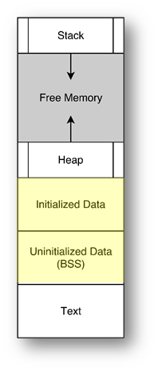

Memory & Addresses

One of the principles behind the design of C++ is that programmers should have as much access as possible to the underlying hardware. For this reason, C++ makes memory addresses explicitly visible to the programmer. An object whose value is an address in memory is called a pointer.
The illustration on the right provides a rough sketch as to how memory is organized in a typical C++ program when it is loaded from disk and run. The machine instructions are put into the text or (code) section. This section of memory is read-only and protected by the operating system.
Global variables and static variables are stored in the static area (which, in the illustration is marked as Initialized Data and Uninitialized Data). You can read and write data to this area of memory, but variables stored here don't move around. They are stored when the program loads and before it starts executing.
At the opposite end of memory is the stack. Each time your program calls a function the computer creates a new stack frame in this memory region, containing parameters, local variables and the return address. When that function returns, the stack frame is discarded leaving the memory free to be used for the subsequent calls.
The region between the end of the program data and the stack is called the heap which is used for dynamically allocated memory. We'll study dynamic memory allocation a little later in this course. It will be a big part of CS 250.
 Where a variable is stored depends on
how
the variable is defined. Click the "Running Man" on the
left to visualize
three variables.
Where a variable is stored depends on
how
the variable is defined. Click the "Running Man" on the
left to visualize
three variables.
 This course content is offered under a
CC
Attribution Non-Commercial license. Content in this course
can be considered under this license unless otherwise noted.
This course content is offered under a
CC
Attribution Non-Commercial license. Content in this course
can be considered under this license unless otherwise noted.